Change analysis for Israel for PRIMAP-hist v2.8_final compared to
v2.7_final
This changelog is published under the creative commons non-commercial
share alike license. For more information see creativecommons.org.
Overview over
emissions by sector and gas
The following figures show the aggregate national total emissions
excluding LULUCF AR6GWP100 for the country reported priority scenario.
The dotted lines show the v2.7_final data.
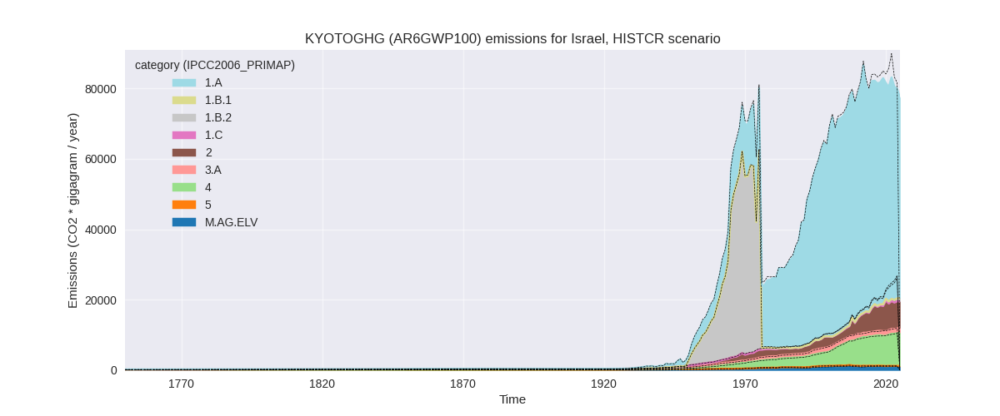
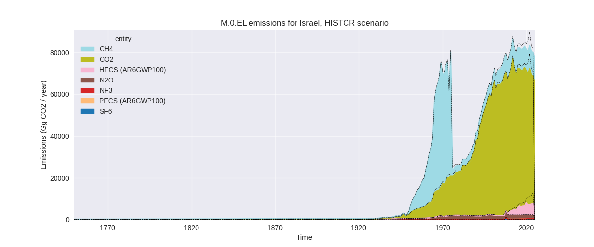
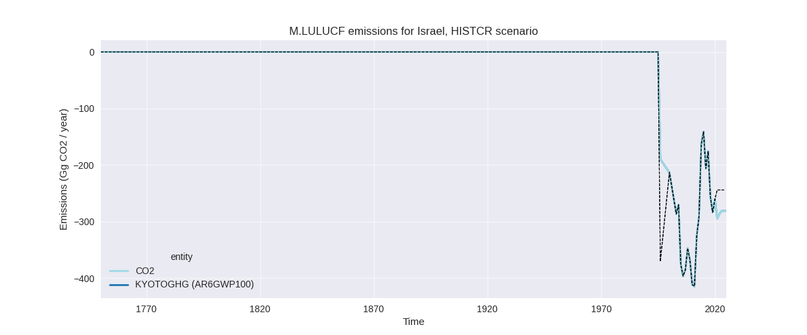
The following figures show the aggregate national total emissions
excluding LULUCF AR6GWP100 for the third party priority scenario. The
dotted lines show the v2.7_final data.
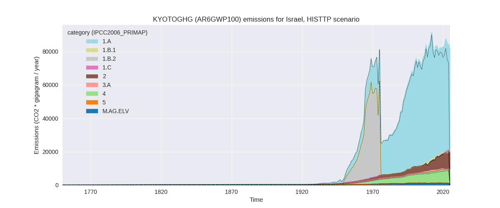
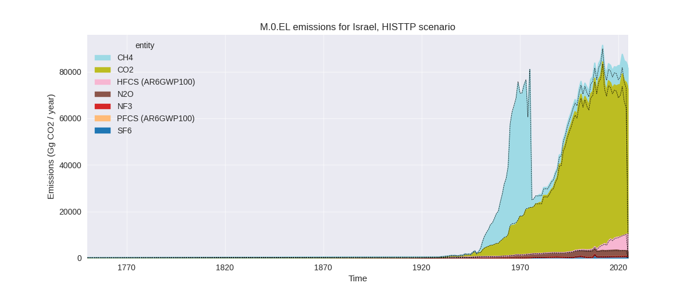
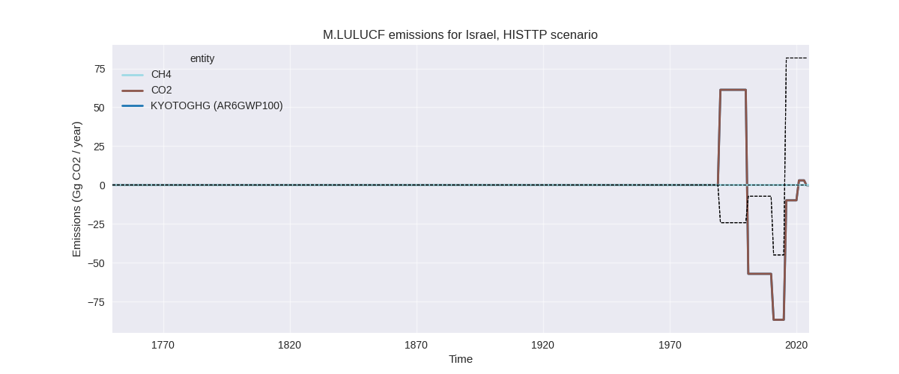
Used country reported data
The changelog with this information is available upon request for
non-commercial customers. Paying commercial customers will be provided
with the information.
Overview over changes
In the country reported priority scenario we have the following
changes for aggregate Kyoto GHG and national total emissions excluding
LULUCF (M.0.EL):
- Emissions in 2024 have changed by -2.0%% (-1665.48 Gg CO2 / year)
- Emissions in 1990-2024 have changed by -2.0%% (-1451.45 Gg CO2 / year)
In the third party priority scenario we have the following changes
for aggregate Kyoto GHG and national total emissions excluding LULUCF
(M.0.EL):
- Emissions in 2024 have changed by 15.3%% (11146.40 Gg CO2 / year)
- Emissions in 1990-2024 have changed by 3.6%% (2566.74 Gg CO2 / year)
Most
important changes per scenario and time frame
In the country reported priority scenario the
following sector-gas combinations have the highest absolute impact on
national total KyotoGHG (AR6GWP100) emissions in 2024
(up to 10 with either at least 0.2% impact on total emissions or at
least 20% change):
- 1: 1.A, CO2 with 4845.03 Gg CO2 / year (8.9%, 5.9%)
- 2: 2, HFCS (AR6GWP100) with -4526.43 Gg CO2 / year (-43.3%, -5.6%)
- 3: 2, CO2 with -1567.53 Gg CO2 / year (-54.2%, -1.9%)
- 4: 2, N2O with -449.21 Gg CO2 / year (-89.7%, -0.6%)
- 5: M.AG.ELV, CO2 with -82.58 Gg CO2 / year (-100.0%, -0.1%)
- 6: 2, PFCS (AR6GWP100) with 54.42 Gg CO2 / year (24.2%, 0.1%)
- 7: 1.B.2, CO2 with 44.00 Gg CO2 / year (34.4%, 0.1%)
In the country reported priority scenario the
following sector-gas combinations have the highest absolute impact on
national total KyotoGHG (AR6GWP100) emissions in
1990-2024 (up to 10 with either at least 0.1% impact on
total emissions or at least 10% change):
- 1: 2, HFCS (AR6GWP100) with -670.36 Gg CO2 / year (-26.8%, -0.9%)
- 2: 2, CO2 with -629.21 Gg CO2 / year (-22.9%, -0.9%)
- 3: 2, N2O with -292.34 Gg CO2 / year (-50.6%, -0.4%)
- 4: 1.A, CO2 with 130.13 Gg CO2 / year (0.2%, 0.2%)
- 5: M.AG.ELV, CO2 with -58.96 Gg CO2 / year (-100.0%, -0.1%)
- 6: 3.A, N2O with -51.19 Gg CO2 / year (-25.2%, -0.1%)
- 7: 4, N2O with 31.28 Gg CO2 / year (56.9%, 0.0%)
In the third party priority scenario the following
sector-gas combinations have the highest absolute impact on national
total KyotoGHG (AR6GWP100) emissions in 2024 (up to 10
with either at least 0.2% impact on total emissions or at least 20%
change):
- 1: 1.A, CO2 with 11770.79 Gg CO2 / year (22.9%, 16.2%)
- 2: 2, CO2 with -800.12 Gg CO2 / year (-30.6%, -1.1%)
- 3: 4, N2O with -325.50 Gg CO2 / year (-44.6%, -0.4%)
- 4: 2, N2O with 241.18 Gg CO2 / year (63.6%, 0.3%)
- 5: 4, CH4 with 206.75 Gg CO2 / year (3.0%, 0.3%)
- 6: 1.B.2, CO2 with 44.00 Gg CO2 / year (34.4%, 0.1%)
In the third party priority scenario the following
sector-gas combinations have the highest absolute impact on national
total KyotoGHG (AR6GWP100) emissions in 1990-2024 (up
to 10 with either at least 0.1% impact on total emissions or at least
10% change):
- 1: 1.A, CO2 with 2281.60 Gg CO2 / year (4.0%, 3.2%)
- 2: 4, CH4 with 250.99 Gg CO2 / year (4.9%, 0.4%)
- 3: 2, N2O with 158.94 Gg CO2 / year (40.6%, 0.2%)
- 4: 2, CO2 with -96.08 Gg CO2 / year (-3.7%, -0.1%)
Notes on data changes
The changelog with this information is available upon request for
non-commercial customers. Paying commercial customers will be provided
with the information.
Changes by sector and gas
For each scenario and time frame the changes are displayed for all
individual sectors and all individual gases. In the sector plot we use
aggregate Kyoto GHGs in AR6GWP100. In the gas plot we usenational total
emissions without LULUCF.
country reported scenario
2024
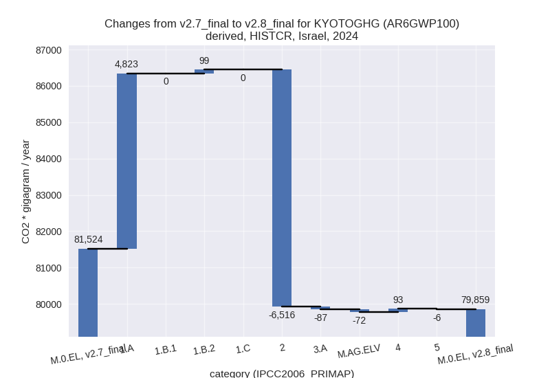
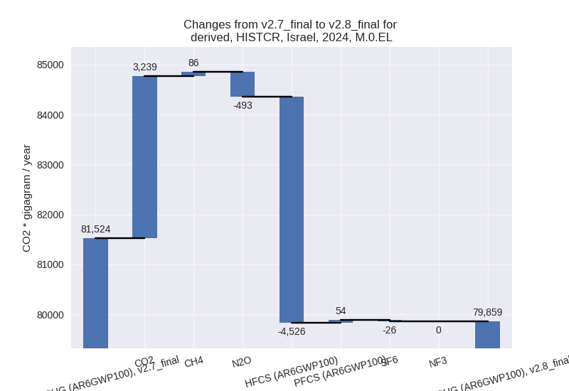
1990-2024
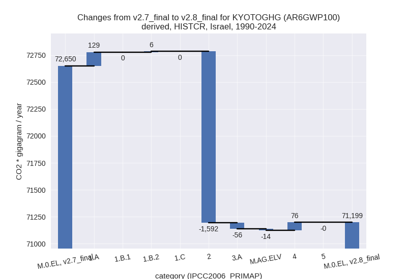
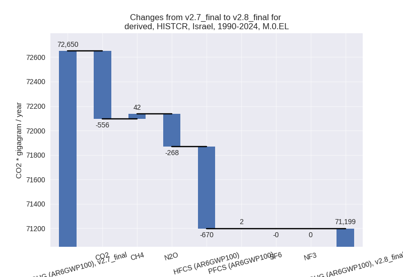
third party scenario
2024
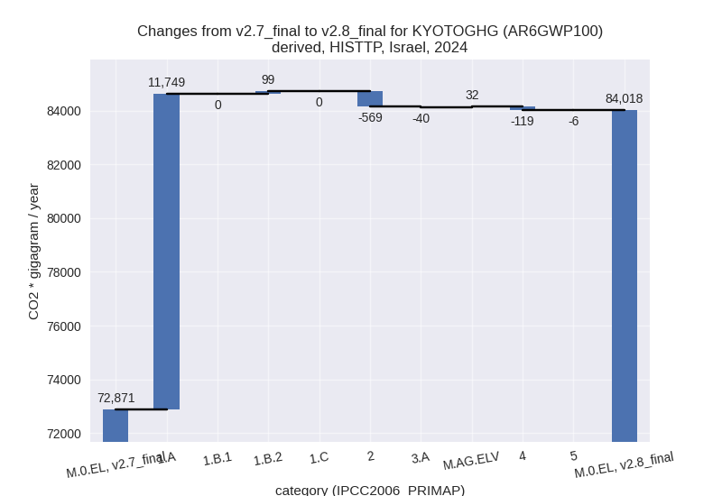
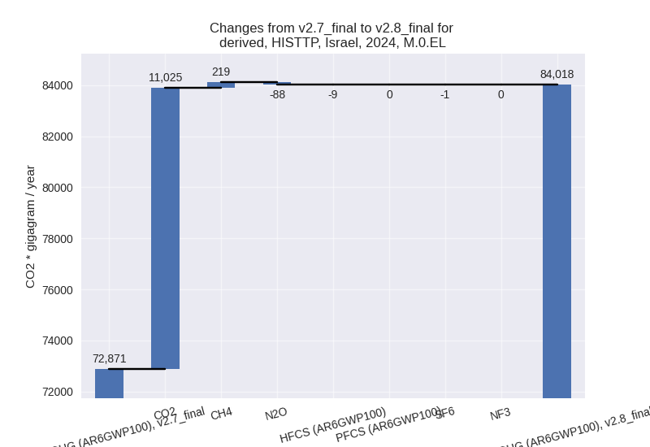
1990-2024
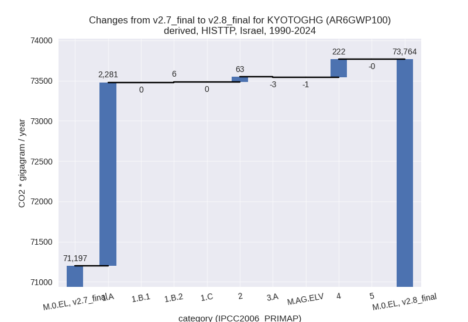
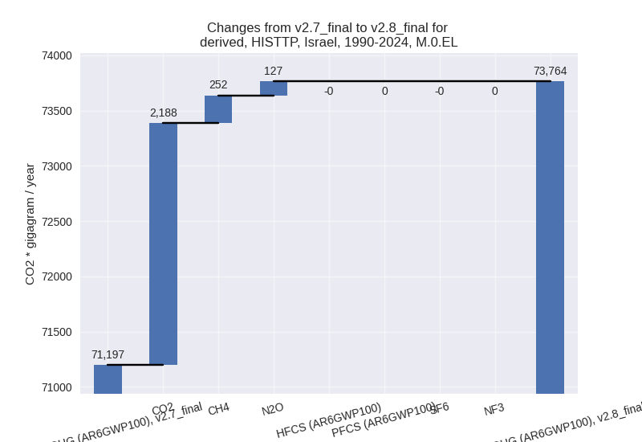
Detailed changes for the
scenarios:
country reported scenario
(HISTCR):
Most important changes
per time frame
For 2024 the following sector-gas combinations have
the highest absolute impact on national total KyotoGHG (AR6GWP100)
emissions in 2024 (up to 20 with either at least 0.2%
impact on total emissions or at least 20% change):
- 1: 1.A, CO2 with 4845.03 Gg CO2 / year (8.9%), 5.9%)
- 2: 2, HFCS (AR6GWP100) with -4526.43 Gg CO2 / year (-43.3%), -5.6%)
- 3: 2, CO2 with -1567.53 Gg CO2 / year (-54.2%), -1.9%)
- 4: 2, N2O with -449.21 Gg CO2 / year (-89.7%), -0.6%)
- 5: M.AG.ELV, CO2 with -82.58 Gg CO2 / year (-100.0%), -0.1%)
- 6: 2, PFCS (AR6GWP100) with 54.42 Gg CO2 / year (24.2%), 0.1%)
- 7: 1.B.2, CO2 with 44.00 Gg CO2 / year (34.4%), 0.1%)
- 8: 2, CH4 with -1.36 Gg CO2 / year (-23.2%), -0.0%)
For 1990-2024 the following sector-gas combinations
have the highest absolute impact on national total KyotoGHG (AR6GWP100)
emissions in 1990-2024 (up to 20 with either at least
0.1% impact on total emissions or at least 10% change):
- 1: 2, HFCS (AR6GWP100) with -670.36 Gg CO2 / year (-26.8%), -0.9%)
- 2: 2, CO2 with -629.21 Gg CO2 / year (-22.9%), -0.9%)
- 3: 2, N2O with -292.34 Gg CO2 / year (-50.6%), -0.4%)
- 4: 1.A, CO2 with 130.13 Gg CO2 / year (0.2%), 0.2%)
- 5: M.AG.ELV, CO2 with -58.96 Gg CO2 / year (-100.0%), -0.1%)
- 6: 3.A, N2O with -51.19 Gg CO2 / year (-25.2%), -0.1%)
- 7: 4, N2O with 31.28 Gg CO2 / year (56.9%), 0.0%)
- 8: 2, CH4 with -1.97 Gg CO2 / year (-26.9%), -0.0%)
Changes in the main sectors for aggregate KyotoGHG (AR6GWP100)
are
- 1: Total sectoral emissions in 2022 are 63470.99 Gg
CO2 / year which is 76.4% of M.0.EL emissions. 2024 Emissions have
changed by 8.9% (4922.54 Gg CO2 /
year). 1990-2024 Emissions have changed by 0.2% (134.67 Gg CO2 / year). For 2024 the
changes per gas
are:
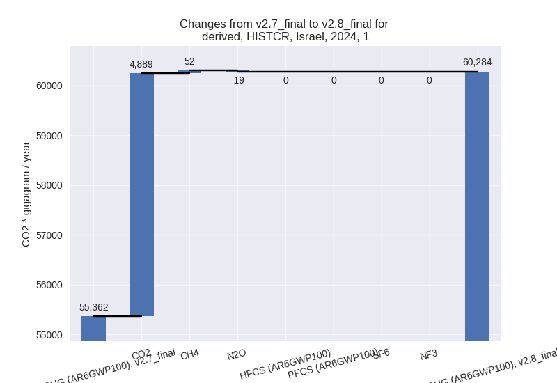
The changes come from the following subsectors:
- 1.A: Total sectoral emissions in 2022 are 62856.76
Gg CO2 / year which is 99.0% of category 1 emissions. 2024 Emissions
have changed by 8.8% (4823.36 Gg CO2
/ year). 1990-2024 Emissions have changed by 0.2% (128.88 Gg CO2 / year). For 2024 the
changes per gas
are:
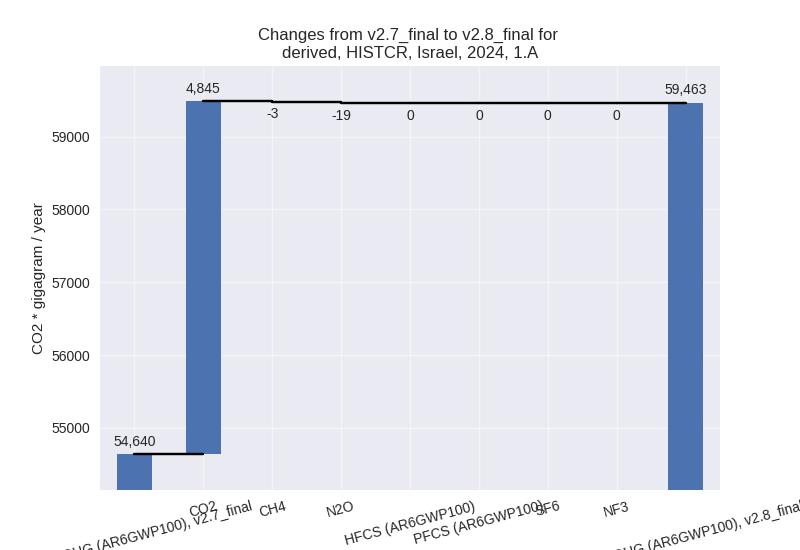
There is no subsector information available in PRIMAP-hist.
- 1.B.2: Total sectoral emissions in 2022 are 614.23
Gg CO2 / year which is 1.0% of category 1 emissions. 2024 Emissions have
changed by 13.7% (99.19 Gg CO2 /
year). 1990-2024 Emissions have changed by 2.5% (5.80 Gg CO2 / year). For 2024 the
changes per gas
are:
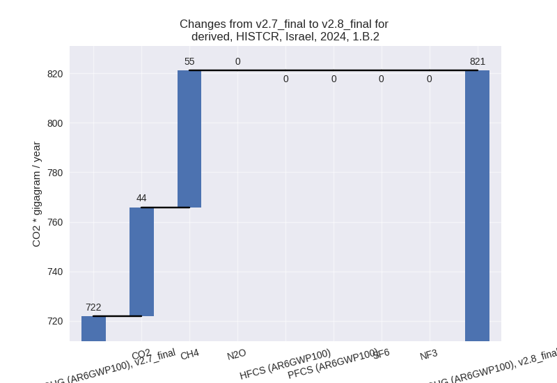
For 1990-2024 the changes per gas
are:
There is no subsector information available in PRIMAP-hist.
- 2: Total sectoral emissions in 2022 are 7898.51 Gg
CO2 / year which is 9.5% of M.0.EL emissions. 2024 Emissions have
changed by -45.7% (-6515.76 Gg CO2 /
year). 1990-2024 Emissions have changed by -26.5% (-1592.21 Gg CO2 / year). For 2024
the changes per gas
are:
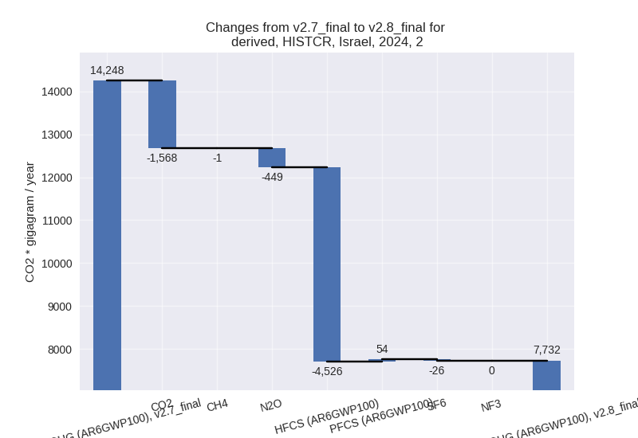
For 1990-2024 the changes per gas
are:
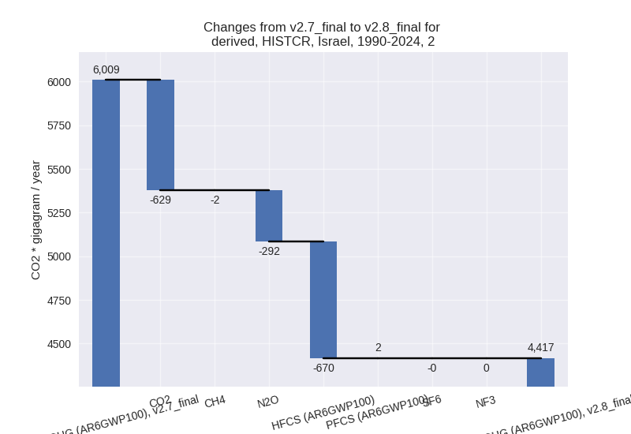
- M.AG: Total sectoral emissions in 2022 are 2449.23
Gg CO2 / year which is 2.9% of M.0.EL emissions. 2024 Emissions have
changed by -6.2% (-158.97 Gg CO2 /
year). 1990-2024 Emissions have changed by -3.0% (-69.51 Gg CO2 / year). For 2024 the
changes per gas
are:
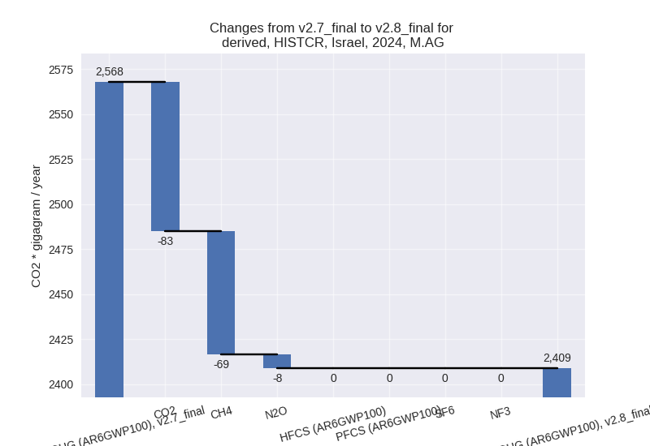
For 1990-2024 the changes per gas
are:
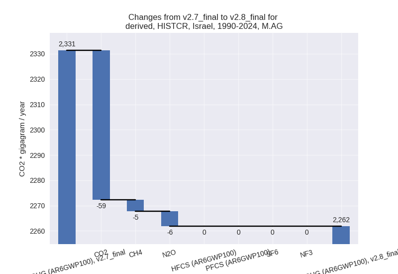
The changes come from the following subsectors:
- 3.A: Total sectoral emissions in 2022 are 1409.15
Gg CO2 / year which is 57.5% of category M.AG emissions. 2024 Emissions
have changed by -6.0% (-87.34 Gg CO2
/ year). 1990-2024 Emissions have changed by -4.2% (-55.86 Gg CO2 / year). For 2024 the
changes per gas
are:
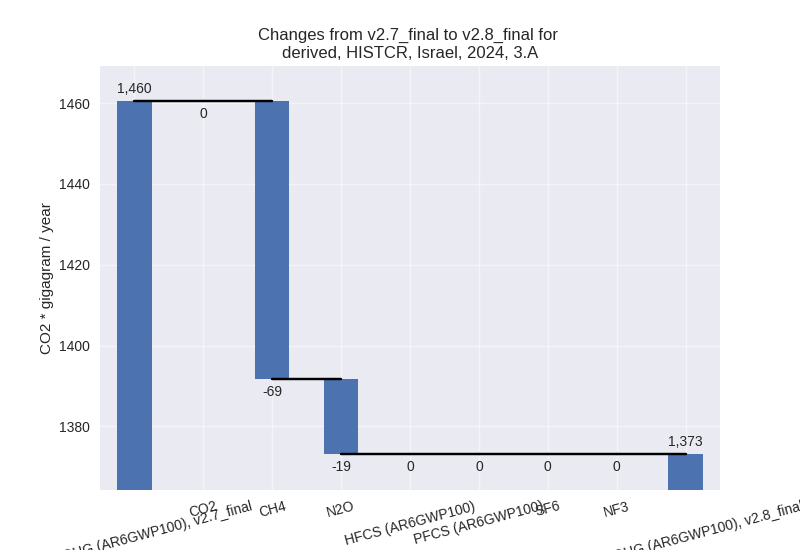
For 1990-2024 the changes per gas
are:
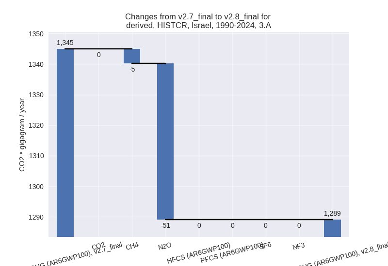
There is no subsector information available in PRIMAP-hist.
- M.AG.ELV: Total sectoral emissions in 2022 are
1040.08 Gg CO2 / year which is 42.5% of category M.AG emissions. 2024
Emissions have changed by -6.5%
(-71.63 Gg CO2 / year). 1990-2024 Emissions have changed by -1.4% (-13.65 Gg CO2 / year). For 2024 the
changes per gas
are:
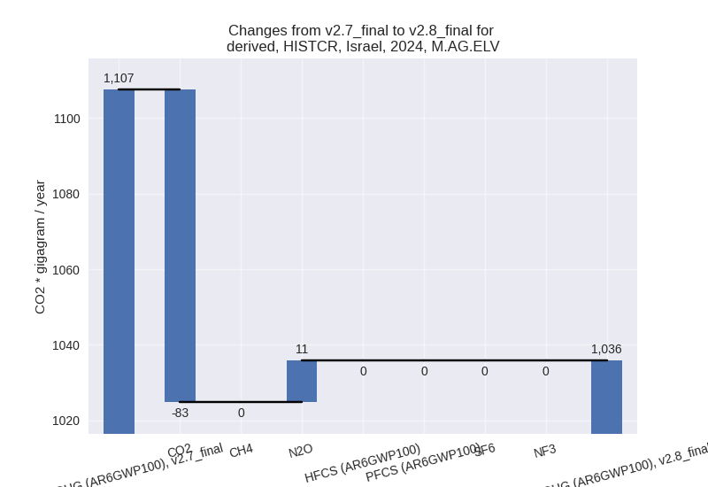
There is no subsector information available in PRIMAP-hist.
- 4: Total sectoral emissions in 2022 are 9077.81 Gg
CO2 / year which is 10.9% of M.0.EL emissions. 2024 Emissions have
changed by 1.0% (93.12 Gg CO2 /
year). 1990-2024 Emissions have changed by 1.2% (75.76 Gg CO2 / year).
- 5: Total sectoral emissions in 2022 are 198.47 Gg
CO2 / year which is 0.2% of M.0.EL emissions. 2024 Emissions have
changed by -3.4% (-6.42 Gg CO2 /
year). 1990-2024 Emissions have changed by -0.1% (-0.16 Gg CO2 / year). For 2024 the
changes per gas
are:
third party scenario (HISTTP):
Most important changes
per time frame
For 2024 the following sector-gas combinations have
the highest absolute impact on national total KyotoGHG (AR6GWP100)
emissions in 2024 (up to 20 with either at least 0.2%
impact on total emissions or at least 20% change):
- 1: 1.A, CO2 with 11770.79 Gg CO2 / year (22.9%), 16.2%)
- 2: 2, CO2 with -800.12 Gg CO2 / year (-30.6%), -1.1%)
- 3: 4, N2O with -325.50 Gg CO2 / year (-44.6%), -0.4%)
- 4: 2, N2O with 241.18 Gg CO2 / year (63.6%), 0.3%)
- 5: 4, CH4 with 206.75 Gg CO2 / year (3.0%), 0.3%)
- 6: 1.B.2, CO2 with 44.00 Gg CO2 / year (34.4%), 0.1%)
- 7: M.AG.ELV, CH4 with 1.45 Gg CO2 / year (76.2%), 0.0%)
For 1990-2024 the following sector-gas combinations
have the highest absolute impact on national total KyotoGHG (AR6GWP100)
emissions in 1990-2024 (up to 20 with either at least
0.1% impact on total emissions or at least 10% change):
- 1: 1.A, CO2 with 2281.60 Gg CO2 / year (4.0%), 3.2%)
- 2: 4, CH4 with 250.99 Gg CO2 / year (4.9%), 0.4%)
- 3: 2, N2O with 158.94 Gg CO2 / year (40.6%), 0.2%)
- 4: 2, CO2 with -96.08 Gg CO2 / year (-3.7%), -0.1%)
Changes in the main sectors for aggregate KyotoGHG (AR6GWP100)
are
- 1: Total sectoral emissions in 2022 are 67771.81 Gg
CO2 / year which is 77.5% of M.0.EL emissions. 2024 Emissions have
changed by 22.6% (11848.38 Gg CO2 /
year). 1990-2024 Emissions have changed by 3.9% (2286.76 Gg CO2 / year). For 2024 the
changes per gas
are:
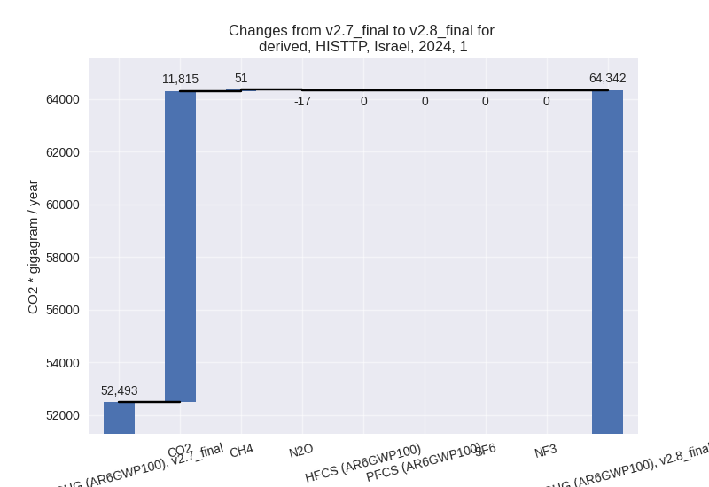
For 1990-2024 the changes per gas
are:
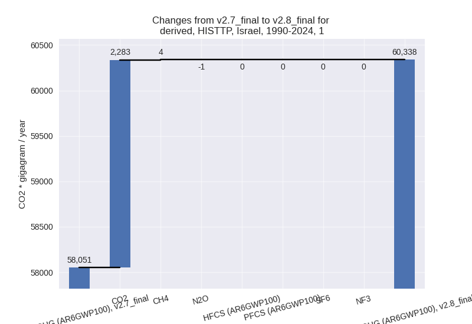
The changes come from the following subsectors:
- 1.A: Total sectoral emissions in 2022 are 67157.58
Gg CO2 / year which is 99.1% of category 1 emissions. 2024 Emissions
have changed by 22.7% (11749.20 Gg
CO2 / year). 1990-2024 Emissions have changed by 3.9% (2280.96 Gg CO2 / year). For 2024 the
changes per gas
are:
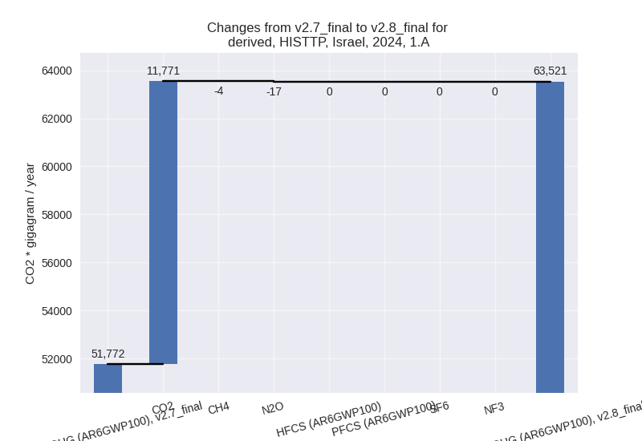
For 1990-2024 the changes per gas
are:
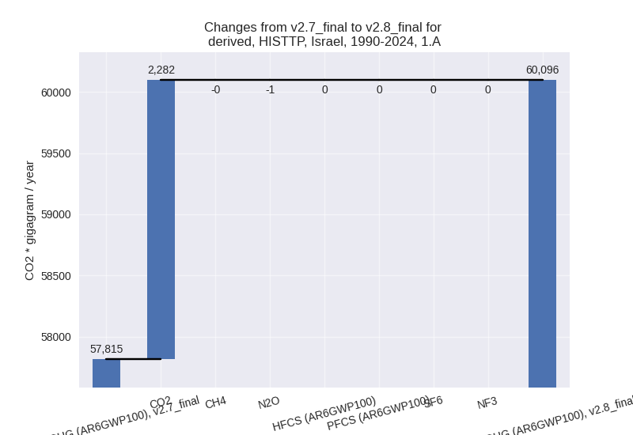
There is no subsector information available in PRIMAP-hist.
- 1.B.2: Total sectoral emissions in 2022 are 614.23
Gg CO2 / year which is 0.9% of category 1 emissions. 2024 Emissions have
changed by 13.7% (99.19 Gg CO2 /
year). 1990-2024 Emissions have changed by 2.5% (5.80 Gg CO2 / year). For 2024 the
changes per gas
are:
For 1990-2024 the changes per gas
are:
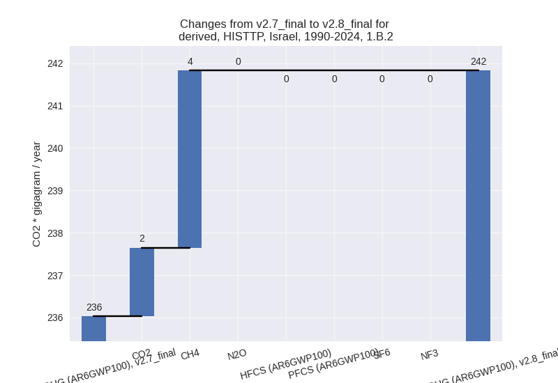
There is no subsector information available in PRIMAP-hist.
- 2: Total sectoral emissions in 2022 are 10075.27 Gg
CO2 / year which is 11.5% of M.0.EL emissions. 2024 Emissions have
changed by -5.3% (-568.87 Gg CO2 /
year). 1990-2024 Emissions have changed by 1.1% (62.57 Gg CO2 / year). For 2024 the
changes per gas
are:
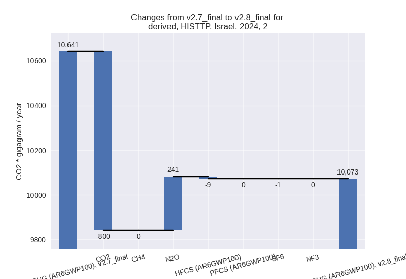
- M.AG: Total sectoral emissions in 2022 are 2014.19
Gg CO2 / year which is 2.3% of M.0.EL emissions. 2024 Emissions have
changed by -0.4% (-7.94 Gg CO2 /
year). 1990-2024 Emissions have changed by -0.3% (-4.44 Gg CO2 / year).
- 4: Total sectoral emissions in 2022 are 7339.07 Gg
CO2 / year which is 8.4% of M.0.EL emissions. 2024 Emissions have
changed by -1.6% (-118.75 Gg CO2 /
year). 1990-2024 Emissions have changed by 4.0% (222.01 Gg CO2 / year). For 1990-2024
the changes per gas
are:
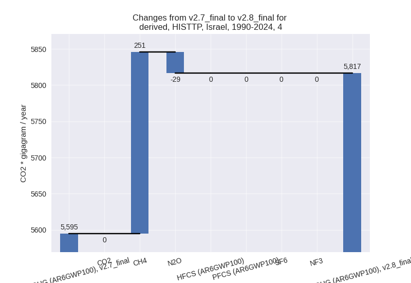
- 5: Total sectoral emissions in 2022 are 198.47 Gg
CO2 / year which is 0.2% of M.0.EL emissions. 2024 Emissions have
changed by -3.4% (-6.42 Gg CO2 /
year). 1990-2024 Emissions have changed by -0.1% (-0.16 Gg CO2 / year). For 2024 the
changes per gas
are:
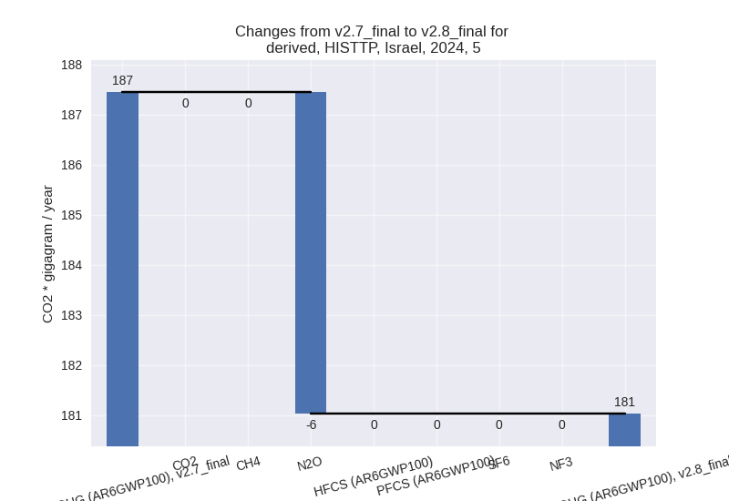